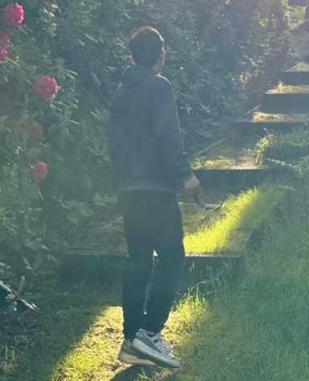

About Me
Hello, I’m Bijaya Gurung — a BSc Computer Science student exploring mobile app development and creative coding. This site is my portfolio and journal documenting my progress, projects, and reflections throughout the course.
I’m passionate about building interactive, responsive apps with a focus on user experience and design. Beyond coding, I enjoy experimenting with creative technology and solving real-world problems through software.